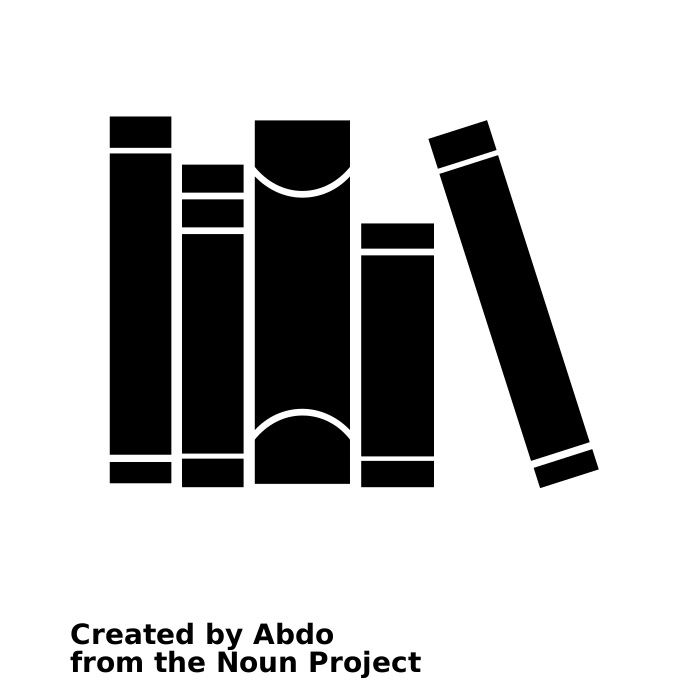
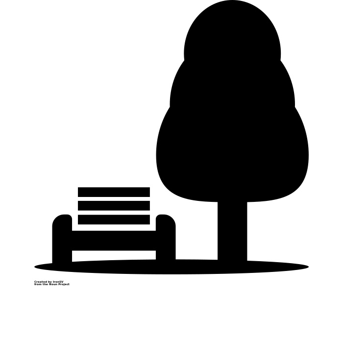

By Caroline Handel
Oct. 6, 2022
In the opening of A Tale of Two Cities, Charles Dickens described how rich and poor residents experienced drastically different versions of the same city. While the novel was published in 1859, chasms in wealth and social position still translate to different realities in the New York City of 2022.
With a per capita income of $22,924, 23.8% of residents in Brooklyn Community District 12 live below the poverty line. The economic picture looks markedly different for those located in Manhattan's Community District 8. With a per capita income of $110,906, just 6.3% of Manhattan CD 8 residents are impoverished. It's the lowest poverty percentage of any CD in New York City.
The income inequality between Brooklyn CD 12 and Manhattan CD 8 translates to clear inequities in the level of access both communities have to New York City facilties and services. These inequities prove especially detrimental in Brooklyn CD 12, as 25% of the population are children aged 0-9, and lack of access to certain city services can have negative effects on child development.
We can examine these negative effects by looking at the varying levels of access both districts have to three sectors or city facilities: Libraries and Cultural Programs, Parks, Gardens and Historical Sites, & Health and Human Services.
How Proximity to City Services at the Community District Level Impacts Child Development
Libraries and Cultural Programs
Parks, Gardens and Historical Sites
 Credit: IronSV at the Noun ProjectHealth and Human Services

Data Sources
- Brooklyn Community District 12 Profile
- Manhattan Community District 8 Profile
- NYC-Brooklyn Community District 12--Borough Park, Kensington & Ocean Parkway PUMA, NY
- NYC-Manhattan Community District 8
- Advocates of Higher Ed Should Also Champion School Arts Programs
- New Evidence of the Benefits of Arts Education
- The Necessity of Urban Green Space for Children's Optimal Development
- Parks and an Equitable Recovery
- The Impact of Lack of Health Care on Children
- 5 school-based health clinics shuttered due to SUNY Downstate budget woes
- New York-Presbyterian Hospital Named New York's #1 Best Hospital in U.S News and World Report's Best Hospitals